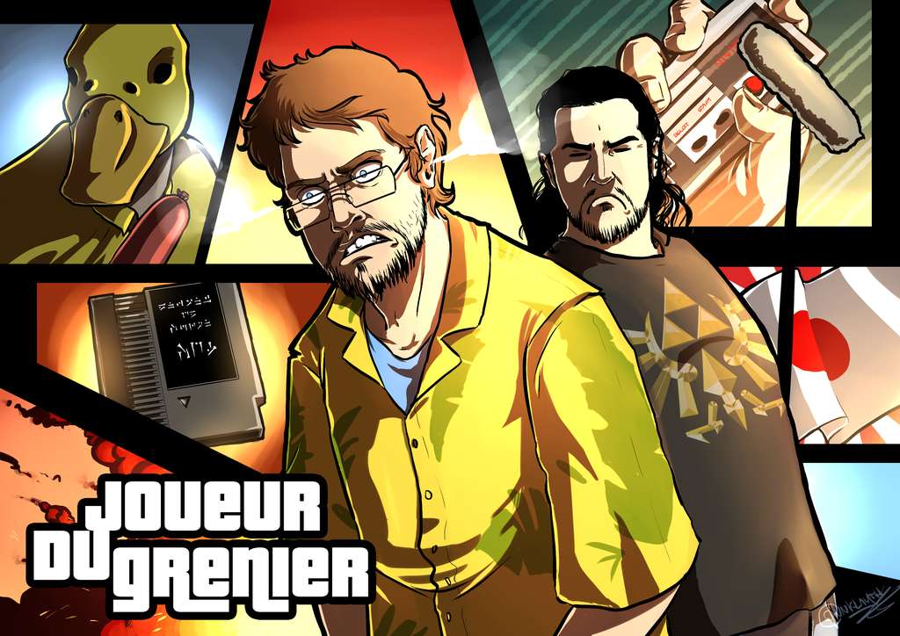

Presentation of things that I like
Favorite Manga : Hunter X Hunter
Hunter X Hunter is a manga written and drawn by Yoshihiro Togashi which is also known as the author of Yu Yu Hakusho. I think Hunter X Hunter is my favorite by so far. Basically, It's a story where we follow a young boy, Gon - One of the four mains characters, which is determined to become a "Hunter" in order to find his own father. The story begins as a Shounen but later the story become progressively darker, and more adult.

Favorite Games
- Danganronpa games
- Bioshock games
- Fire Emblem Games
Danganronpa is a video game franchise created and developed by Spike Chunsoft, the main genre of the series is the Visual Novel genre.In the fist game - Danganronpa : Trigger Happy Havoc , we control the character Makoto Naegi which can be considered as the typical normal high school student and which is invited to the Hope's peak academy - unlike the other typical High School. However after some kind of accidents, the student are confined in the school and are forced to kill each others, if they want to leave the school.

BioShock is a first-person shooter video game developed by Irrational Games. In the first takes places in 1960, where the protagonist Jack is a passenger on a plane that goes down in the Atlantic Ocean. However the plane crash, and Jack remains as the only survivor. After the crash, he tries to reach a nearby lighthouse which takes him to an underwater city : Rapture.
Fire Emblem is a fantasy tactical role-playing game game franchise developed by Intelligent Systems. It is a franchise which takes place across a medieval or renaissance-themed time period and one of the aspect of the game is the permanent death of characters in battle, which removed them from the rest of the game if they are defeated in battle.

Favorite Youtuber : Joueur Du Grenier
JDG is a french Youtuber with more than 3 millions subscribers where the videos are performed by Frederic Molas - Joueur Du Grenier (or Attic gamer in english) and by Sebastien Rassiat - Seb (the JDG colleague), The concept of his main series are similar to AVGN (which is to test bad retro games such as Dragon's lair) the concept is of course inspired from AVGN but the content is completely different from AVGN.
